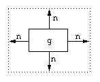
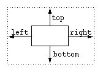

LayoutKit |
[index] |
Hier finden sich Glyphs zum Positionieren, zum Setzen der Größe von Glyphs, etc..
// KitFactory Deklaration
#include <Fresco/figures/utility.h>
FigureKit *figurekit = KitFactory::instance()->figures()
| Glyph back(Glyph body, Glyph under) |
Liefert einen Glyph, bei dem under hinter body liegt
und Operationen wie append an body weitergegeben
werden.Dieser Glyph sollte z.B. in Dialogfenstern genutzt werden, um die Hintergrundfarbe eines Fensters festzulegen. Beispiel:
Glyph_ptr main_window = layouts->back(
|
| Glyph clipper(Glyph g) |
|
Glyph create_backdrop()
|
| Glyph fixed_grid(Grid::Index upper) |
| Glyph fixed_range(Grid g,Grid::Range r) |
| Glyph front(Glyph body, Glyph over) |
Liefert einen Glyph, bei dem over vor body liegt
und Operationen wie append an body weitergegeben
werden.
|
| Glyph margin(Glyph g, Coord n) |
|

Fügt den Glyph g in einen ihn umgebenden freien Bereich der Größe n ein.
Beispiel:
Glyph_var margin = layouts->margin(button, Coord(15));
|
| Glyph margin_flexible(Glyph g,Coord n, Coord max, Coord min) |
| Fügt den Glyph g in einen ihn umgebenden freien Bereich der Größe n ein, welcher zwischen min und max variert werden kann. |
| Glyph margin_lrbt(Glyph g, Coord left, Coord right, Coord bottom, Coord top) |
|  Fügt den Glyph g in einen ihn umgebenden freien Bereich ein. |
|
Glyph margin_lrbt_flexible(Glyph g, Coord left, Coord lmax, Coord lmin, Coord right, Coord rmax, Coord rmin, Coord bottom, Coord bmax, Coord bmin, Coord top, Coord tmax, Coord tmin ) |
| Glyph natural(Glyph g, Coord width, Coord height) |
| Liefert einen Glyph zurück, welcher die Größe von g setzt. |
|
Glyph hbox() Glyph vbox() |
| Ordnet seine Kinder nach der Reihenfolge des Einfügens von links nach rechts bzw. von oben nach unten an. |
|
Glyph hbox_first_aligned() Glyph vbox_first_aligned() |
|
Glyph hbox_align_elements(Alignment align) Glyph vbox_align_elements(Alignment align) |
Während bei hbox die Ausrichtung am oberen Rand erfolgt bzw. bei
vbox am linken Rand, kann man hier durch align eine
Ausrichtung zwischen 0.0 und 1.0 angeben.
Beispiel:
// vbox, welche seine Kinder zentriert
|
| Glyph overlay() |
| Glyph deck() |
| Glyph between(Glyph g, Glyph under, Glyph over) |
| Glyph glue(Axis a, Coord natural, Coord stretch, Coord shrink, Alignment align) |
| Glyph glue_requisition(Glyph::Requisition r) |
|
Glyph hfil() Glyph hglue_fil(Coord natural) Glyph hglue(Coord natural, Coord stretch, Coord shrink) Glyph hglue_aligned(Coord natural, Coord stretch, Coord shrink, Alignment a) |
|
Glyph hspace(Coord n) Glyph vspace(Coord n) |
| Ein unveränderlicher Abstand der Größe n. |
|
Glyph vfil() Glyph vglue_fil(Coord natural) Glyph vglue(Coord natural, Coord stretch, Coord shrink) Glyph vglue_aligned(Coord natural, Coord stretch, Coord shrink, Alignment a) |
|
Glyph shape_of(in Glyph g) Glyph shape_of_xy(Glyph gx, Glyph gy) Glyph shape_of_xyz(Glyph gx, Glyph gy, Glyph gz) |
|
Glyph strut(in Font f, in Coord natural, in Coord stretch, in Coord shrink) Glyph hstrut(in Coord right_bearing, in Coord left_bearing,in Coord natural, in Coord stretch, in Coord shrink) Glyph vstrut(in Coord ascent, in Coord descent,in Coord natural, in Coord stretch, in Coord shrink) Glyph spaces(in long count, in Coord each, in Font f, in Color c) |
|
Glyph align(in Glyph g, in Alignment x, in Alignment y) Glyph align_axis(in Glyph g, in Axis a, in Alignment align) Glyph halign(in Glyph g, in Alignment x) Glyph valign(in Glyph g, in Alignment y) |
|
Glyph fixed(in Glyph g, in Coord x, in Coord y) Glyph fixed_axis(in Glyph g, in Axis a, in Coord size) Glyph hfixed(in Glyph g, in Coord x) Glyph vfixed(in Glyph g, in Coord y) |
| Glyph flexible(Glyph g, Coord stretch, Coord shrink) |
| Glyph flexible_fil(Glyph g) |
| Liefert einen Glyph zurück, mit dem g in der Größe verändert werden kann und mit der Standardhintergrundfarbe (Hellgrau) hinterlegt ist. |
|
Glyph flexible_axis(Glyph g, Axis a, Coord stretch, Coord shrink) Glyph hflexible(Glyph g, Coord stretch, Coord shrink) Glyph vflexible(Glyph g, Coord stretch, Coord shrink) |
|
Glyph natural(Glyph g, Coord width, Coord height) Glyph natural_axis(Glyph g, Axis a, Coord size) Glyph hnatural(Glyph g, Coord x) Glyph vnatural(Glyph g, Coord y) |
|
Glyph hmargin(Glyph g, Coord both) Glyph hmargin_lr(Glyph g, Coord lmargin, Coord rmargin) Glyph hmargin_lr_flexible(Glyph g, Coord lmargin, Coord lstretch, in Coord lshrink,Coord rmargin, Coord rstretch, Coord rshrink) |
|
Glyph vmargin(Glyph g, Coord both) Glyph vmargin_lr(Glyph g, Coord lmargin, Coord rmargin) Glyph vmargin_lr_flexible(Glyph g, Coord lmargin, Coord lstretch, Coord lshrink,Coord rmargin, Coord rstretch, Coord rshrink) |
|
Glyph lmargin(in Glyph g, in Coord natural) Glyph lmargin_flexible(in Glyph g, in Coord natural, in Coord stretch, in Coord shrink) |
|
Glyph rmargin(in Glyph g, in Coord natural) Glyph rmargin_flexible(in Glyph g, in Coord natural, in Coord stretch, in Coord shrink) |
|
Glyph bmargin(in Glyph g, in Coord natural) Glyph bmargin_flexible(in Glyph g, in Coord natural, in Coord stretch, in Coord shrink) |
|
Glyph tmargin(Glyph g, Coord natural) Glyph tmargin_flexible(Glyph g, Coord natural, Coord stretch, in Coord shrink) |